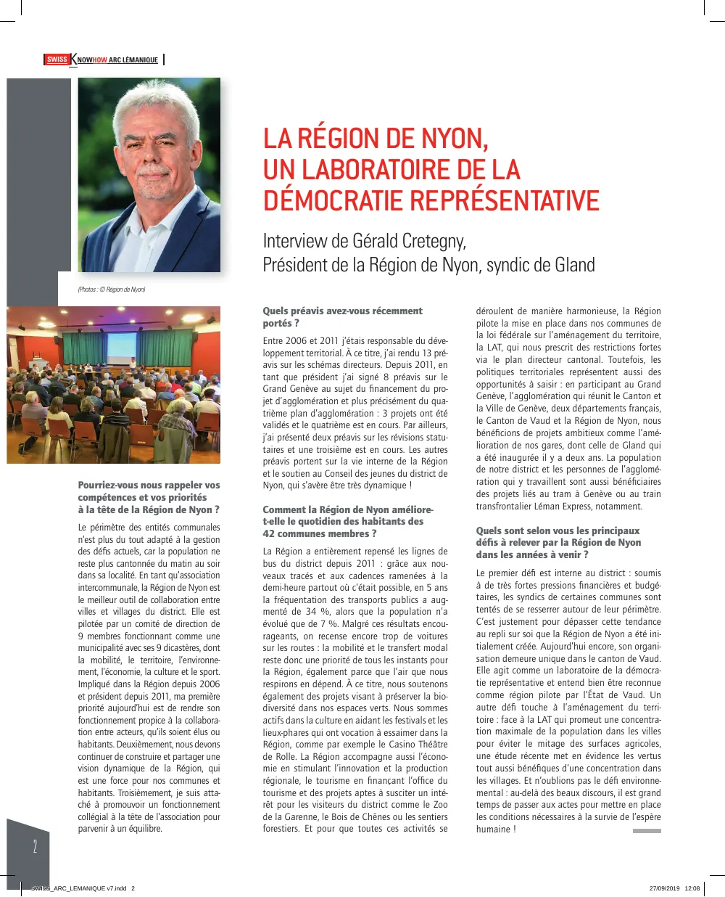
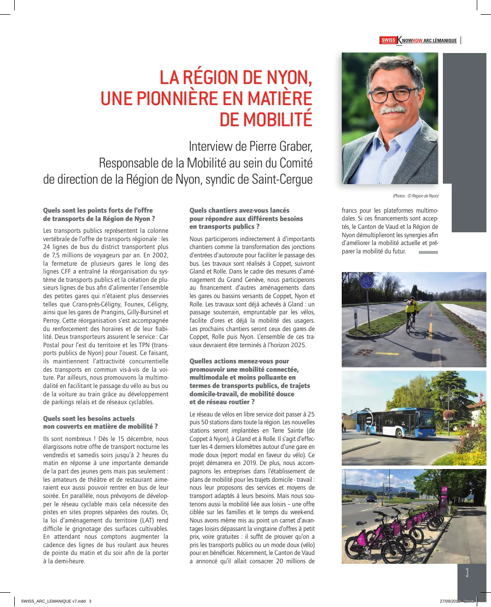
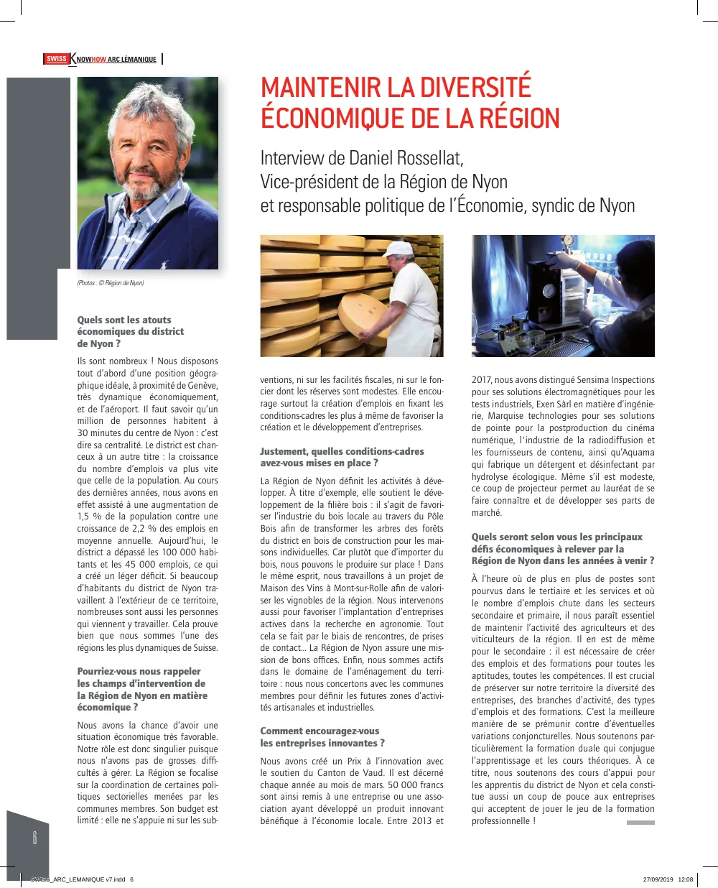

Interview · Swiss Knowhow – Arc lémanique (septembre 2019)
La Région de Nyon, un laboratoire de la démocratie représentative
Pourriez-vous nous rappeler vos compétences et vos priorités à la tête de la Région de Nyon ?
Le périmètre des entités communales n’est plus du tout adapté à la gestion des défis actuels, car la population ne reste plus cantonnée du matin au soir dans sa localité. En tant qu’association intercommunale, la Région de Nyon est le meilleur outil de collaboration entre villes et villages du district. Elle est pilotée par un comité de direction de 9 membres fonctionnant comme une municipalité avec ses 9 dicastères, dont la mobilité, le territoire, l’environnement, l’économie, la culture et le sport. Impliqué dans la Région depuis 2006 et président depuis 2011, ma première priorité aujourd’hui est de rendre son fonctionnement propice à la collaboration entre acteurs, qu’ils soient élus ou habitants. Deuxièmement, nous devons continuer de construire et partager une vision dynamique de la Région, qui est une force pour nos communes et habitants. Troisièmement, je suis attaché à promouvoir un fonctionnement collégial à la tête de l’association pour parvenir à un équilibre.
Quels préavis avez-vous récemment portés ?
Entre 2006 et 2011 j’étais responsable du développement territorial. À ce titre, j’ai rendu 13 préavis sur les schémas directeurs. Depuis 2011, en tant que président j’ai signé 8 préavis sur le Grand Genève au sujet du financement du projet d’agglomération et plus précisément du quatrième plan d’agglomération : 3 projets ont été validés et le quatrième est en cours. Par ailleurs, j’ai présenté deux préavis sur les révisions statutaires et une troisième est en cours. Les autres préavis portent sur la vie interne de la Région et le soutien au Conseil des jeunes du district de Nyon, qui s’avère être très dynamique !
Comment la Région de Nyon améliore-t-elle le quotidien des habitants des 42 communes membres ?
La Région a entièrement repensé les lignes de bus du district depuis 2011 : grâce aux nouveaux tracés et aux cadences ramenées à la demi-heure partout où c’était possible, en 5 ans la fréquentation des transports publics a augmenté de 34 %, alors que la population n’a évolué que de 7 %. Malgré ces résultats encourageants, on recense encore trop de voitures sur les routes : la mobilité et le transfert modal reste donc une priorité de tous les instants pour la Région, également parce que l’air que nous respirons en dépend. À ce titre, nous soutenons également des projets visant à préserver la biodiversité dans nos espaces verts. Nous sommes actifs dans la culture en aidant les festivals et les lieux-phares qui ont vocation à essaimer dans la Région, comme par exemple le Casino Théâtre de Rolle. La Région accompagne aussi l’économie en stimulant l’innovation et la production régionale, le tourisme en finançant l’office du tourisme et des projets aptes à susciter un intérêt pour les visiteurs du district comme le Zoo de la Garenne, le Bois de Chênes ou les sentiers forestiers. Et pour que toutes ces activités se déroulent de manière harmonieuse, la Région pilote la mise en place dans nos communes de la loi fédérale sur l’aménagement du territoire, la LAT, qui nous prescrit des restrictions fortes via le plan directeur cantonal. Toutefois, les politiques territoriales représentent aussi des opportunités à saisir : en participant au Grand Genève, l’agglomération qui réunit le Canton et la Ville de Genève, deux départements français, le Canton de Vaud et la Région de Nyon, nous bénéficions de projets ambitieux comme l’amélioration de nos gares, dont celle de Gland qui a été inaugurée il y a deux ans. La population de notre district et les personnes de l’agglomération qui y travaillent sont aussi bénéficiaires des projets liés au tram à Genève ou au train transfrontalier Léman Express, notamment.
Quels sont selon vous les principaux défis à relever par la Région de Nyon dans les années à venir ?
Le premier défi est interne au district : soumis à de très fortes pressions financières et budgétaires, les syndics de certaines communes sont tentés de se resserrer autour de leur périmètre. C’est justement pour dépasser cette tendance au repli sur soi que la Région de Nyon a été initialement créée. Aujourd’hui encore, son organisation demeure unique dans le canton de Vaud. Elle agit comme un laboratoire de la démocratie représentative et entend bien être reconnue comme région pilote par l’État de Vaud. Un autre défi touche à l’aménagement du territoire : face à la LAT qui promeut une concentration maximale de la population dans les villes pour éviter le mitage des surfaces agricoles, une étude récente met en évidence les vertus tout aussi bénéfiques d’une concentration dans les villages. Et n’oublions pas le défi environnemental : au-delà des beaux discours, il est grand temps de passer aux actes pour mettre en place les conditions nécessaires à la survie de l’espère humaine !
Texte paru dans Swiss Knowhow – Arc lémanique (septembre 2019), p. 2, tel que publié dans l'édition imprimée. En cas d'écart, la version imprimée fait foi.
Photos
Articles

Interview · texte intégralLa Région de Nyon, un laboratoire de la démocratie représentative
Interview de Gérald Cretegny, président de la Région de Nyon, syndic de Gland

Interview · texte intégralLa Région de Nyon, une pionnière en matière de mobilité
Interview de Pierre Graber, responsable de la mobilité au sein du comité de direction, syndic de Saint-Cergue
Maîtriser la densification du territoire
Interview de Frédéric Mani, responsable politique de la planification territoriale, syndic de Dully
Protéger l'environnement pour une meilleure qualité de vie
Interview de Gudrun Russig, responsable de l'environnement au sein du comité de direction, municipale à Signy-Avenex

Interview · texte intégralMaintenir la diversité économique de la région
Interview de Daniel Rossellat, vice-président de la Région de Nyon et responsable de l'économie, syndic de Nyon
Fédérer les acteurs au service du rayonnement régional
Interview de Gérard Produit, responsable de la culture, du tourisme et du sport, syndic de Coppet